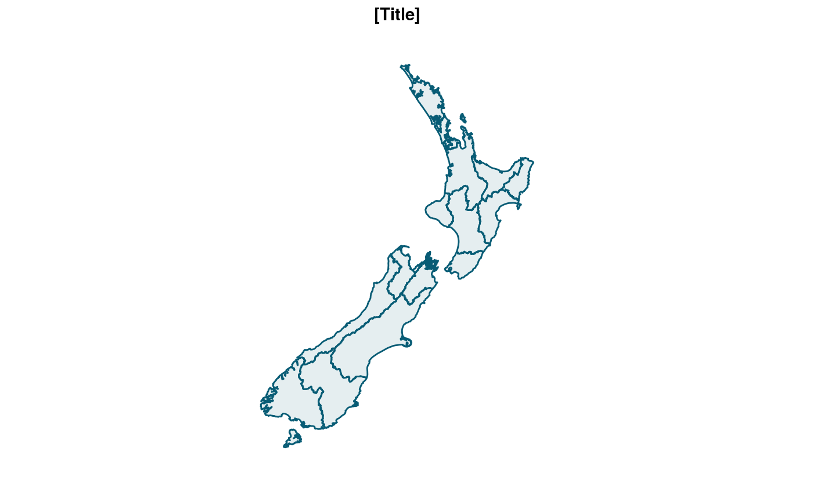
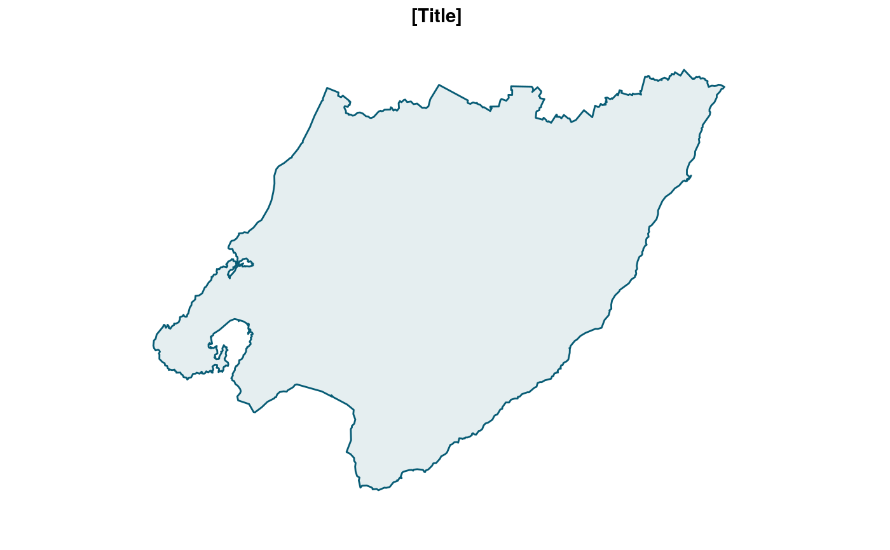

New Zealand coastline, excluding the Chathams, with regional boundaries simplified for ggplot.
nz_region
An sf object.
https://datafinder.stats.govt.nz/layer/98765-regional-council-2019-clipped-generalised/
nz_region#> Simple feature collection with 16 features and 2 fields #> geometry type: MULTIPOLYGON #> dimension: XY #> bbox: xmin: 166.4261 ymin: -47.28981 xmax: 178.5504 ymax: -34.39263 #> epsg (SRID): 4326 #> proj4string: +proj=longlat +datum=WGS84 +no_defs #> # A tibble: 16 x 3 #> # Groups: region_code [16] #> region_code region_name geometry #> * <fct> <fct> <MULTIPOLYGON [°]> #> 1 01 Northland Region (((173.2475 -35.34802, 173.2494 -35.35006, 173… #> 2 02 Auckland Region (((175.44 -36.26242, 175.4375 -36.25857, 175.4… #> 3 03 Waikato Region (((174.7847 -38.13349, 174.7865 -38.13396, 174… #> 4 04 Bay of Plenty Re… (((176.1715 -37.68738, 176.1707 -37.68717, 176… #> 5 05 Gisborne Region (((177.876 -38.0767, 177.9723 -37.84501, 178.0… #> 6 06 Hawke's Bay Regi… (((177.9018 -39.07296, 177.908 -39.07566, 177.… #> 7 07 Taranaki Region (((174.2067 -39.59022, 174.2015 -39.58808, 174… #> 8 08 Manawatu-Wanganu… (((175.5606 -38.49023, 175.5655 -38.49453, 175… #> 9 09 Wellington Region (((174.8099 -41.34305, 174.8109 -41.34476, 174… #> 10 12 West Coast Region (((170.3303 -43.09979, 170.3268 -43.10285, 170… #> 11 13 Canterbury Region (((172.6917 -42.10662, 172.7017 -42.1013, 172.… #> 12 14 Otago Region (((169.7051 -46.47425, 169.7035 -46.47368, 169… #> 13 15 Southland Region (((167.7202 -47.04975, 167.7135 -47.04868, 167… #> 14 16 Tasman Region (((172.4941 -41.04557, 172.4961 -41.04071, 172… #> 15 17 Nelson Region (((173.3167 -41.24106, 173.3154 -41.23618, 173… #> 16 18 Marlborough Regi… (((173.3044 -41.507, 173.2889 -41.49327, 173.2…ggplot_sf(nz_region)